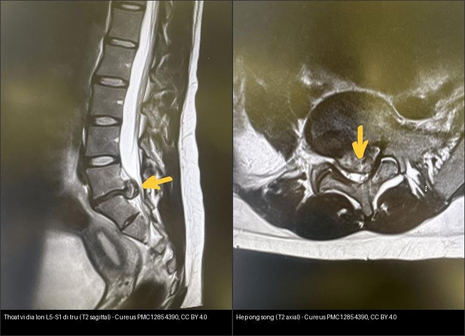
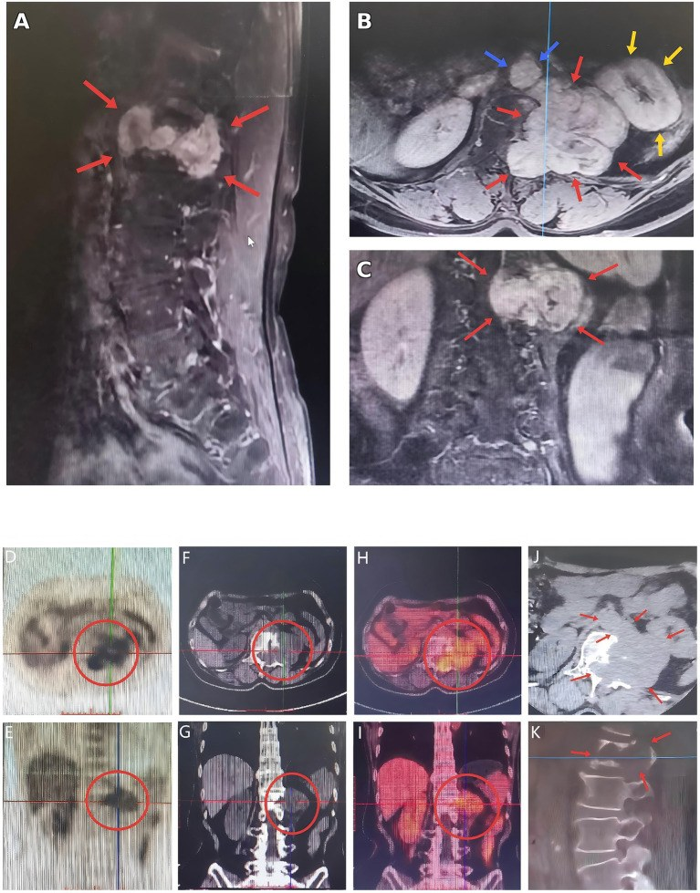

220 — Ống sống 3 khoang: thoát vị đĩa, u tủy & viêm tủy / Spinal compartments
Tags: pattern:ong-song vung:cot-song score:MSU-Pfirrmann
Mức chắc chắn (certainty): tổng hợp y văn (literature synthesis) — nhóm tự biên từ y văn mở; các ca trong quiz là ca nguyên văn (verbatim case) chép đúng tuổi – lâm sàng – chú thích gốc.
1. Tổng quan — túi màng cứng là ranh giới sống còn
- Ống sống 3 khoang: ngoài màng cứng (extradural: đĩa + di căn + tụ máu), trong màng cứng-ngoài tủy (intradural-extramedullary: schwannoma + meningioma), nội tủy (intramedullary: ependymoma + viêm tủy) — TẠI SAO túi màng cứng (thecal sac) quyết định: khối ngoài màng đẩy lệch túi, khối trong màng-ngoài tủy nong rộng khoang dưới nhện hình chén (meniscus/gutter), khối nội tủy phình rộng tủy.
- Thoát vị đĩa: nhân nhầy (nucleus) chui qua vòng xơ (annulus) — lồi (bulge) → phồng (protrusion: đáy rộng hơn vòm) → thoát (extrusion: vòm rộng hơn đáy) → di trú (migration/sequestration).
- Phân độ Pfirrmann I–V (tín hiệu + chiều cao đĩa) + MSU (vị trí A/B/C + độ 1–3) quyết định mổ/thủ thuật.
- Danh pháp NASS v2.0: lồi (bulge) > 25% chu vi (> 90°) vs thoát vị khu trú (protrusion/extrusion) < 25% chu vi — TẠI SAO: lồi là thoái hóa lan tỏa (bảo tồn), thoát vị khu trú mới là đích mổ.
- Thoái hóa Modic bản tận: Type 1 (T1 tối/T2 sáng = viêm-phù), Type 2 (T1 sáng = mỡ), Type 3 (T1+T2 tối = xơ) — dấu móng vuốt (claw sign: viền Modic 1 ôm đĩa thoái hóa = thoái hóa, không phải viêm!; viêm thật phá bản tận 2 bên + đĩa sáng như dịch).
 *T2 sagittal: thoát vị đĩa trung tâm lớn L5–S1 di trú theo trục thân sống (mũi tên vàng), chèn ép nặng chùm đuôi ngựa + hai rễ S1 — điển hình thoát vị di trú (sequestration). Nguồn: Alshanqity M et al., Cureus 2025 (PMC12854390) Fig 1, CC BY 4.0.*
*T2 sagittal: thoát vị đĩa trung tâm lớn L5–S1 di trú theo trục thân sống (mũi tên vàng), chèn ép nặng chùm đuôi ngựa + hai rễ S1 — điển hình thoát vị di trú (sequestration). Nguồn: Alshanqity M et al., Cureus 2025 (PMC12854390) Fig 1, CC BY 4.0.*
2. Gamut đau lưng + yếu chân (Gamut)
- Đĩa lệch bên + đau rễ một bên: thoát vị cạnh bên — NSAID + vật lý trị liệu, mổ khi liệt tiến triển.
- Khối trong màng-ngoài tủy + meniscus: schwannoma/meningioma — mổ bóc (giữ tủy).
- Phình tủy + tăng T2 dài + ngấm loang: viêm tủy cắt ngang vs ependymoma — corticoid + kháng thể AQP4/MOG.
- Tê yên ngựa + bí tiểu: hội chứng chùm đuôi ngựa (CES) — MRI tối khẩn + mổ < 24–48 giờ.
3. Bảng so sánh phân biệt (ma trận đối chiếu)
| Thực thể (entity) | Hình ảnh điển hình | Chốt vào (rule-in) | Chốt loại (rule-out) | Gợi ý xác nhận |
|---|---|---|---|---|
| Thoát vị đĩa | Đẩy lệch túi màng cứng; extrusion vòm > đáy; Pfirrmann IV–V | Đau rễ theo khoanh + extrusion/MSU 2–3 | Meniscus trong màng → schwannoma | MRI + ODI; mổ khi liệt/CES |
| Schwannoma/meningioma | Nong khoang dưới nhện hình chén + ngấm đồng nhất | Meniscus + trong màng-ngoài tủy | Phình tủy → nội tủy | Mổ bóc, giữ tủy |
| Viêm tủy cắt ngang | Tăng T2 ≥ 3 đốt + phù tủy + ngấm loang (LETM) | LETM + AQP4/MOG | Khối ngấm đặc + phình khu trú → ependymoma | Corticoid + thay huyết tương |
| CES (cấp cứu) | Đĩa lớn giữa + túi bẹt + tê yên ngựa + bí tiểu | Yên ngựa + bí tiểu = mổ < 24–48 giờ | Đau rễ đơn thuần → bảo tồn | MRI tối khẩn + mổ giải ép |

*Trái: T2 sagittal — thoát vị đĩa trung tâm lớn L5–S1 di trú (mũi tên), chèn ép chùm đuôi ngựa. Phải: T2 axial — đĩa lồi ra sau (protrusion) làm hẹp nặng ống sống + hẹp hai ngách bên (recess stenosis). Nguồn: Alshanqity M et al., Cureus 2025 (PMC12854390) Fig 1 & 2, CC BY 4.0. Ảnh ghép letterbox, giữ tỉ lệ.*Khoang trong màng–ngoài tủy — schwannoma hình quả tạ (dumbbell):

MRI có cản quang (A sagittal) + PET/CT: khối lớn ngấm thuốc không đồng nhất ở L1, hình quả tạ qua lỗ liên hợp (dumbbell) — dấu hiệu kinh điển của schwannoma thần kinh ngoại biên. Nguồn: Jiang C et al., Front Med 2026 (PMC13138916) Fig 1, CC BY 4.0.4. Protocol MRI cột sống
- MRI T1/T2/STIR + gadolinium + axial qua đĩa: Pfirrmann + MSU + meniscus + LETM; CES = mổ < 24–48 giờ.
flowchart TD
A[Đau lưng + yếu chân] --> B{Tê yên ngựa + bí tiểu?}
B -->|Có| C[CES: MRI tối khẩn + mổ]
B -->|Không| D{Meniscus hay đẩy túi?}
D -->|Meniscus| E[Trong màng: mổ bóc]
D -->|Đẩy túi| F[Đĩa: MSU/Pfirrmann]
5. Cạm bẫy
- Bỏ sót CES vì chỉ đau lưng — hỏi tiểu + tê yên ngựa mọi thoát vị lớn giữa.
- Viêm tủy gọi nhầm u nội tủy → mổ oan — AQP4/MOG + LETM + corticoid thử trước.
- Đĩa mất nước tuổi già giả thoát vị — Pfirrmann + tương quan rễ lâm sàng mới mổ.
- Mảnh đĩa di trú tự do (sequestered) ngấm viền giả schwannoma/áp-xe ngoài màng — liên tục với đĩa mẹ + claw Modic là thoái hóa (schwannoma có meniscus, áp-xe có sốt!).
6. Tự lượng giá — Blind Quiz
Ca 1 — Bệnh nhân nữ, đau lưng cấp + đau rễ hai bên chân, tê vùng yên ngựa, bí tiểu. T2 sagittal. Mô tả trước khi mở đáp án.
- Hỏi: Dấu hiệu ở đĩa L5–S1? Chèn ép gì? Chẩn đoán + giờ mổ?
Bấm để hiện đáp án
- Thoát vị đĩa trung tâm lớn L5–S1, di trú theo trục (sequestration) (mũi tên vàng) → chùm đuôi ngựa + hai rễ S1 chèn ép nặng. Lâm sàng tê yên ngựa + bí tiểu = hội chứng chùm đuôi ngựa (CES).
- Xử trí: MRI tối khẩn + mổ giải ép < 24–48 giờ (không bảo tồn như đau rễ đơn thuần).
- Nguồn ảnh: Alshanqity M et al., Cureus 2025 (PMC12854390), Fig 1, CC BY 4.0.
Ca 2 — Cùng bệnh nhân, lát T2 axial qua đĩa L5–S1. Ống sống bị gì?

Bấm để hiện đáp án
- Đĩa lồi ra sau (posterior disc protrusion) (mũi tên vàng) làm hẹp nặng ống sống + hẹp hai ngách bên (recess stenosis) — giải thích chèn ép hai rễ. Đối chiếu sagittal (Ca 1): thoát vị di trú theo trục.
- Lưu ý danh pháp NASS: lồi (bulge) > 25% chu vi là thoái hóa lan tỏa; thoát vị khu trú mới là đích mổ.
- Nguồn ảnh: Alshanqity M et al., Cureus 2025 (PMC12854390), Fig 2, CC BY 4.0.
Ca 3 — Bệnh nhân nữ lớn tuổi, đau lưng + yếu chân tiến triển. MRI có cản quang tầng L1: khối cạnh đường giữa.
Bấm để hiện đáp án
- Schwannoma hình quả tạ (dumbbell) tầng L1: khối trong màng–ngoài tủy, ngấm thuốc không đồng nhất, lan qua lỗ liên hợp (dấu quả tạ). Vị trí trong màng–ngoài tủy → nghĩ schwannoma/meningioma (nong khoang dưới nhện hình chén = meniscus) thay vì khối nội tủy (phình tủy).
- Xử trí: mổ bóc, giữ tủy; đối chiếu u nội tủy (ependymoma) và viêm tủy cắt ngang — nối [215].
- Nguồn ảnh: Jiang C et al., Front Med 2026 (PMC13138916), Fig 1, CC BY 4.0.
Bài liên quan chéo
- 200 – Tổng quan Thần kinh
- 215 – Mất myelin (LETM, AQP4)
- 221 – Chấn thương cột sống (trục + cột Denis)
Ảnh
- Tên file:
NNN_slug_Modality_SourceID.jpg. Chi tiết nguồn + giấy phép từng ảnh:images/CREDITS.mdvàsources.md. - Ảnh nguồn CC BY 4.0 (ghi nguồn đầy đủ); ảnh ghép đối chiếu tạo bằng
tools/make_composite.py(letterbox, không crop/kéo giãn).
Không dùng để chẩn đoán độc lập khi chưa có người hướng dẫn.